Plots#
Visualization Module#
This module provides visualization tools for analyzing and understanding the dynamics of adaptive environments and agent interactions for influencer games. It includes plotting utilities for various domains (1D, 2D, and simplex) and supports visualizing agent positions, gradients, influence distributions, and bifurcation dynamics.
The module is designed to work with the AdaptiveEnv class and provides a framework for creating visual representations of agent behaviors in influencer game environments.
Dependencies:#
InflGame.utils
InflGame.kernels
InflGame.domains
Usage:#
The Shell class can be used to visualize the results of simulations performed using the AdaptiveEnv class. It supports various visualization types, including position plots, gradient plots, probability plots, and bifurcation plots.
Examples#
from InflGame.adaptive.visualization import Shell
import torch
import numpy as np
# Initialize the Shell
shell = Shell(
num_agents=3,
agents_pos=np.array([0.2, 0.5, 0.8]),
parameters=torch.tensor([1.0, 1.0, 1.0]),
resource_distribution=torch.tensor([10.0, 20.0, 30.0]),
bin_points=np.array([0.1, 0.4, 0.7]),
infl_configs={'infl_type': 'gaussian'},
learning_rate_type='cosine_annealing',
learning_rate=[0.0001, 0.01, 15],
time_steps=100,
domain_type='1d',
domain_bounds=[0, 1]
)
# Set up the adaptive environment
shell.setup_adaptive_env()
# Plot agent positions
fig = shell.pos_plot()
fig.show()
Classes
- class InflGame.adaptive.visualization.Shell(num_agents, agents_pos, parameters, resource_distribution, bin_points, infl_configs={'infl_type': 'gaussian'}, learning_rate_type='cosine_annealing', learning_rate=[0.0001, 0.01, 15], time_steps=100, fp=0, infl_cshift=False, cshift=None, infl_fshift=False, Q=None, domain_type=None, rect_X=None, rect_Y=None, rect_positions=None, resource_grid=None, domain_bounds=[0, 1], resource_type='na', domain_refinement=10, tolerance=1e-05, tolerated_agents=None, ignore_zero_infl=False, device=None)#
The Shell class provides a framework for simulating and visualizing adaptive dynamics in various domains (1D, 2D, and simplex). It supports gradient ascent, influence distribution calculations, and plotting utilities for analyzing agent behaviors in resource distribution environments.
Methods
agent_density_3d([pos_matrix, bins, ...])Create a 3D histogram showing agent counts at final positions.
analyze_near_critical_point(x_star[, ...])Perform high-resolution analysis near the theoretical critical point x*.
analyze_zero_crossings(refined_parameters, ...)Perform detailed analysis of zero crossings in the refined parameter space.
bifurcation_plot_AD_MARL(parameters_AD, ...)Create side-by-side bifurcation plots comparing Adaptive Dynamics (AD) and Multi-Agent Reinforcement Learning (MARL) approaches.
bifurcation_tree(main_matrix, left_matrices, ...)Create a vertical tree plot with a main rectangle and left/right branches based on bifurcation changes.
calc_direction_and_strength([...])Calculate the direction and strength of gradients for agents via interacting with
InflGame.adaptive.grad_func_env.calc_infl_dist(pos, parameter_instance)Calculate the influence distribution for agents via thier influence kernels by interacting with the class
InflGame.adaptive.grad_func_env.dist_plot(agent_id[, parameter_instance, ...])Plot the agents' influence distributions distributions via the function
calc_infl_dist.dist_pos_gif(max_frames[, x_min, y_min, ...])Plot the agents' influence distributions and their positions into a gif.
dist_pos_plot(parameter_instance[, ...])Plots the agents' influence distributions with their their positions.
equilibrium_bifurcation_plot([matrix, ...])Plots the equilibrium bifurcation for agents over a range of reach parameters.
find_and_analyze_zero_crossings(test_eval, ...)Complete workflow to find, refine, and analyze eigenvalue zero crossings.
find_zero_crossings(test_eval, parameters_list)Identify parameter values where eigenvalue real parts are close to zero.
first_order_bifurcation_plot(processed_data)Generate and plot first-order bifurcation diagram with stability analysis.
first_order_bifurcation_plot_old(...[, ...])Plots the first-order bifurcation for agents over a range of alpha values (resource parameters) via func:
jacobian_stability_fast.generate_combined_figure(alpha, ...[, ...])Generate the standardized combined bifurcation and equilibrium analysis figure.
grad_plot([title_ads, save, name_ads, font, ...])Plots the gradients of agents as the lines versus time.
jacobian_stability_fast(...[, ...])Calculate the stability of the symmetric Nash equilibrium via analytical computation of maximum eigenvalues.
node_to_images(main, left_matrices, ...[, ...])process all matrices and create images for each node
plot_equilibrium_heatmap(newton_search_data)Generate and plot a heatmap of equilibrium positions in a 1D influence game.
pos_plot([title_ads, fig_size, save, ...])Plots the positions of agents over gradient ascent steps.
Plot the histogram of agents' positions at equilibrium for a given reach parameter via the function
InflGame.adaptive.grad_func_env.gradient_ascent.prob_plot([position, parameters, title_ads, ...])Plot the probability distribution of agents' influence over a bin/resource point via their relative influence over that point
resource_distribution_plot([alpha, ...])Plots the resource distribution with optional alpha line annotation for bimodal distributions.
reward_groups_stacked([idx, rwd_type, ...])Plot stacked reward groups across agents for a selected bifurcation slice.
Set up the adaptive environment for the simulation.
Set up the bifurcation environment for parameter sweep analysis.
simple_diagonal_test_point([point])Test a single point to verify gradient ascent functionality.
three_agent_pos_3A1d([x_star, title_ads, ...])Create combined visualization showing three-agent dynamics in 3D space alongside position trajectories.
three_agent_pos_3d([x_star, title_ads, ...])Visualize dynamics for three players: demonstrates the players positions changing in time in 3-d space.
threed_fixed_diagonal_view([resolution, ...])Creates a 3D plot with fixed view looking down the x=y=z diagonal line, showing gradient ascent trajectories from multiple starting points with optional parallel processing.
threed_fixed_diagonal_view_gif(max_frames[, ...])Create a 3D diagonal view GIF showing gradient ascent traces over varying reach parameters.
Creates an interactive 3D plot of gradient ascent paths from multiple starting points, with paths color-coded based on the initial position's quadrant.
vect_plot([agent_id, parameter_instance, ...])Plot the vector field of gradients for a specific agents calculated by the function
calc_direction_and_strength.reward_bifurcation_matrix_setup
- agent_density_3d(pos_matrix=None, bins=25, distance_threshold=0.05, cmap='viridis', font={'cbar_label_pad': 15, 'cbar_size': 16, 'default_size': 15, 'font_family': 'sans-serif', 'label_pad': 10, 'legend_size': 12, 'title_pad': 10, 'title_size': 18}, figsize=(20, 16), xlabel=None, ylabel=None, zlabel='Number of Agents', axis_return=False, edgecolor='black', linewidth=0.2, alpha=0.9, title_ads=[], save=False, name_ads=[], save_types=['.png', '.svg'], paper_figure={'figure_id': 'agent_density_3d', 'paper': False, 'section': 'A'}, id=0, cap_z_axis=True, integer_ticks=True)#
Create a 3D histogram showing agent counts at final positions.
Automatically selects the appropriate implementation based on domain type: - For ‘2d’ domains: Uses rectangular histogram binning - For ‘simplex’ domains: Converts barycentric to Cartesian and uses triangular binning with clustering
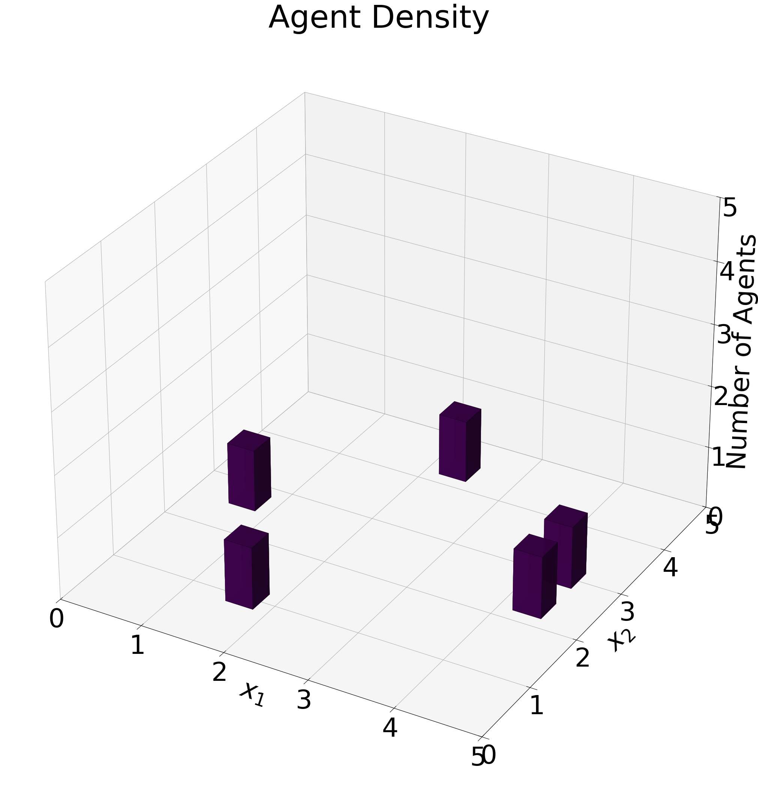
Example agent-density histogram on the simplex.#
- Parameters:
- pos_matrixUnion[torch.Tensor, np.ndarray, None]
Position matrix. If None, uses self.field.pos_matrix.
- binsint
Number of bins in each dimension.
- distance_thresholdfloat
Distance threshold for clustering nearby agents (simplex only).
- cmapstr
Colormap name.
- fontdict
Font configuration dictionary.
- figsizetuple
Figure size as (width, height).
- xlabelstr
Label for x-axis.
- ylabelstr
Label for y-axis.
- zlabelstr
Label for z-axis.
- axis_returnbool
If True, return axes object; if False, return figure object.
- edgecolorOptional[str]
Color of outlines around bars.
- linewidthfloat
Width of bar edge lines.
- alphafloat
Bar transparency.
- title_adsList[str]
Additional titles for the plot.
- savebool
Whether to save the plot.
- name_adsList[str]
Additional names for saved files.
- save_typesList[str]
File types to save the plot.
- paper_figuredict
Dictionary for paper figure naming.
- idint
Identifier for file naming.
- cap_z_axisbool
If True, cap the z-axis maximum at num_agents.
- integer_ticksbool
If True, only show integer ticks on the z-axis.
- Returns:
- matplotlib.figure.Figure
The generated plot figure.
- analyze_near_critical_point(x_star, padding=0.01, num_points=50)#
Perform high-resolution analysis near the theoretical critical point x*.
- Parameters:
- x_startorch.Tensor
Theoretical critical point.
- paddingfloat
Range to examine on either side of x*.
- num_pointsint
Number of parameter points to examine.
- Returns:
- dict
Analysis results focused on the critical point.
- analyze_zero_crossings(refined_parameters, refined_eval, x_star=None)#
Perform detailed analysis of zero crossings in the refined parameter space.
- Parameters:
- refined_parameterstorch.Tensor
Tensor of refined parameter values.
- refined_evaltorch.Tensor
Tensor of eigenvalues at refined parameters.
- x_starOptional[torch.Tensor]
Theoretical critical point (if available).
- Returns:
- dict
Dictionary of analysis results and figure handles.
- bifurcation_plot_AD_MARL(parameters_AD, parameters_MARL, matrix=None, fontmain={'axis_size': 15, 'cbar_size': 16, 'default_size': 15, 'font_family': 'sans-serif', 'legend_size': 12, 'title_size': 18}, save=False, name_ads=[], save_types=['.png', '.svg'], paper_figure={'figure_id': 'pos_plot', 'paper': False, 'section': 'A'}, envolve=False, complete=False, bifurcation_key_tolerance=3, show_legend=True, svg_options=None)#
Create side-by-side bifurcation plots comparing Adaptive Dynamics (AD) and Multi-Agent Reinforcement Learning (MARL) approaches.
This method generates comparative visualization showing how equilibrium positions change with parameter variation for both gradient-based adaptive dynamics and reinforcement learning methods.
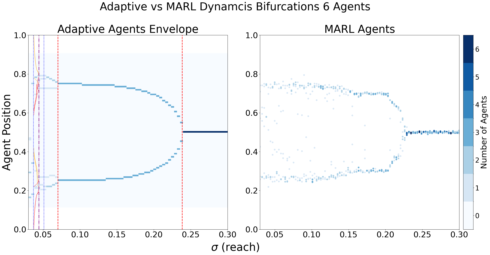
Side-by-side AD vs MARL bifurcation comparison for five agents.#
- Parameters:
- parameters_ADdict
Configuration dictionary for adaptive dynamics bifurcation with keys: - ‘reach_start’: Starting reach parameter value - ‘reach_end’: Ending reach parameter value - ‘reach_num_points’: Number of parameter points - ‘time_steps’: Gradient ascent iterations - ‘tolerance’: Convergence tolerance - ‘tolerated_agents’: Number of agents for convergence check - ‘plot_type’: Type of bifurcation plot - ‘refinements’: Plot refinement level - ‘title_ads’: Additional title strings - ‘cmaps’: Color map configuration - ‘cbar_config’: Colorbar configuration - ‘parallel_configs’: Parallel processing settings - ‘font’: Font configuration
- parameters_MARLdict
Configuration dictionary for MARL bifurcation with keys: - ‘step_size’: Step size for RL environment - ‘resource’: Resource distribution type - ‘reach_start’: Starting reach parameter - ‘reach_end’: Ending reach parameter - ‘reach_parameters’: Array of reach parameter values - ‘refinements’: Plot refinement level - ‘plot_type’: Type of bifurcation plot - ‘infl_type’: Influence kernel type - ‘title_ads’: Additional title strings - ‘font’: Font configuration - ‘cbar_config’: Colorbar configuration
- fontmaindict
Main font configuration for combined plot.
- savebool
Whether to save the plot.
- name_adsList[str]
Additional filename components for saving.
- save_typesList[str]
File formats for saving (e.g., [‘.png’, ‘.svg’]).
- paper_figuredict
Paper figure configuration with ‘paper’, ‘section’, ‘figure_id’ keys.
- Returns:
- matplotlib.figure.Figure
Combined matplotlib figure with AD and MARL bifurcation plots.
- bifurcation_tree(main_matrix, left_matrices, right_matrices, reach_start, reach_end, reach_num_points, label_to_color=None, figsize=(20, 24), rect_width=0.8, horizontal_spacing=2.5, box_height=10, box_width=0.1, key_tolerance=2, image_zoom=0.15, box_space=None, image_offset=(0, 0), branch_spacing=1.5, label_offset=0.1, show_labels=False, hide_text=False, max_reward=None, display_type='tree', title_ads=[], save=False, name_ads=[], font={'cbar_size': 16, 'default_size': 30, 'font_family': 'sans-serif', 'label_size': 10, 'legend_size': 12, 'table_size': 15, 'title_size': 60}, font_sub={'cbar_size': 16, 'default_size': 24, 'font_family': 'sans-serif', 'label_size': 24, 'legend_size': 12, 'table_size': 15, 'title_size': 32}, save_types=['.png', '.svg'], paper_figure={'figure_id': 'reward_groups_stacked', 'paper': False, 'section': '3_2_6'}, show_column_labels=True)#
Create a vertical tree plot with a main rectangle and left/right branches based on bifurcation changes.
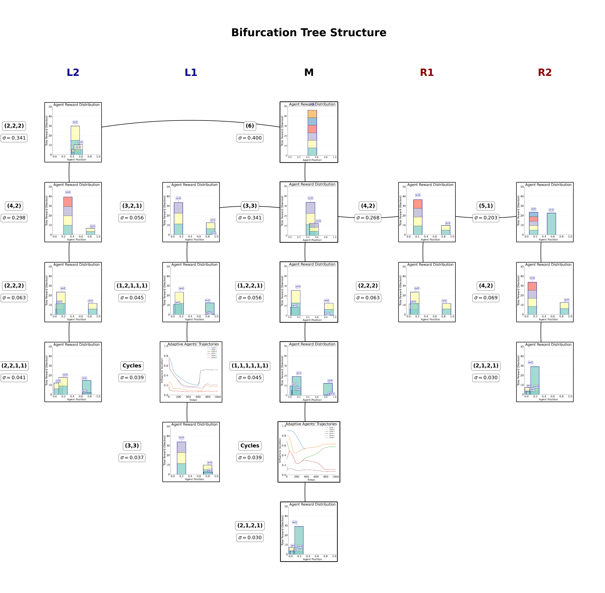
Example reward-annotated bifurcation tree for a six-player game.#
- Parameters:
- main_matrixdict
Main bifurcation matrix containing ‘max’, ‘min’, etc.
- left_matriceslist of dict
List of matrices for left branches
- right_matriceslist of dict
List of matrices for right branches
- reach_parameterslist of torch.Tensor
Reach parameters for each matrix
- num_agentsint
Number of agents in the system
- reach_startfloat
Starting sigma value
- reach_endfloat
Ending sigma value
- label_to_colordict, optional
Mapping of classification labels to colors
- figsizetuple
Figure size (width, height)
- rect_widthfloat
Width of each rectangle
- horizontal_spacingfloat
Spacing between rectangles
- box_heightfloat
Total height of each rectangle
- font_sizeint
Font size for labels
- show_labelsbool
Whether to show classification labels on rectangles
- display_typestr
‘rect’ for rectangle display (colored rectangles with legends) ‘tree’ for tree display (text labels at branch points)
- Returns:
- fig, axmatplotlib figure and axes
- calc_direction_and_strength(parameter_instance=0, agent_id=0, ids=[0, 1], pos=None, alt_form=False)#
Calculate the direction and strength of gradients for agents via interacting with
InflGame.adaptive.grad_func_env.- Parameters:
- parameter_instanceUnion[List[float], np.ndarray, torch.Tensor]
Parameters for the influence function.
- agent_idint
ID of the agent.
- idsList[int]
IDs of agents of interest.
- posOptional[torch.Tensor]
Positions of agents.
- Returns:
- torch.Tensor
The calculated gradients.
- calc_infl_dist(pos, parameter_instance)#
Calculate the influence distribution for agents via thier influence kernels by interacting with the class
InflGame.adaptive.grad_func_env.- Parameters:
- postorch.Tensor
Positions of agents.
- parameter_instanceUnion[List[float], np.ndarray, torch.Tensor]
Parameters for the influence function.
- Returns:
- torch.Tensor
The influence distribution.
- dist_plot(agent_id, parameter_instance=0, cmap='viridis', typelabels=['A', 'B', 'C'], save=False, name_ads=[], save_types=['.png', '.svg'], paper_figure={'figure_id': 'dist_plot', 'paper': False, 'section': 'A'}, font={'cbar_size': 16, 'default_size': 15, 'font_family': 'sans-serif', 'legend_size': 12, 'title_size': 18}, **kwargs)#
Plot the agents’ influence distributions distributions via the function
calc_infl_dist.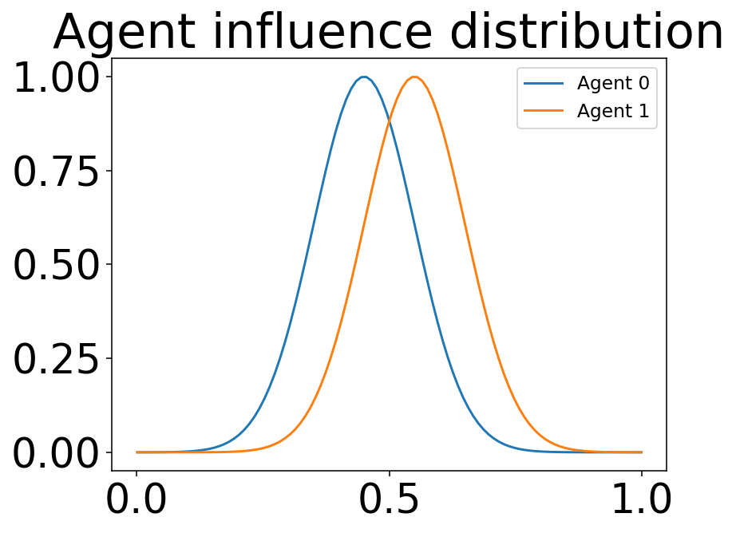
Example 1D influence kernels for each agent.#
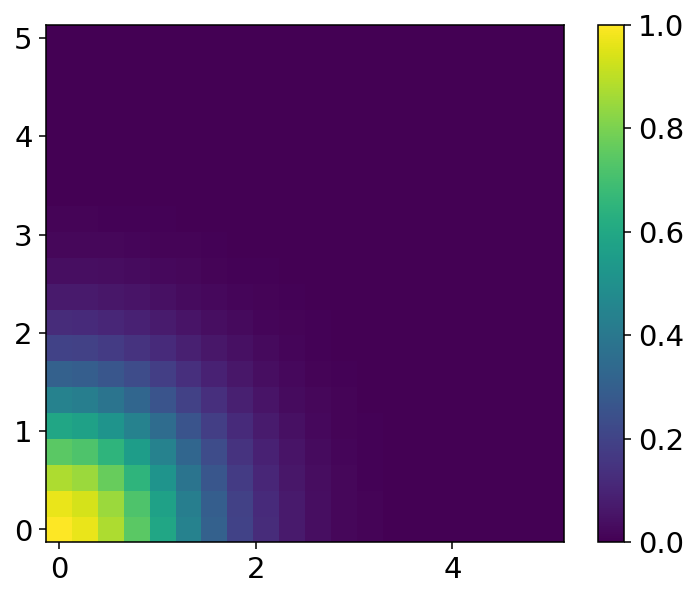
Example 2D influence distribution for a single agent.#
- Parameters:
- agent_idint
ID of the agent.
- parameter_instanceUnion[List[float], np.ndarray, torch.Tensor]
Parameters for the influence function.
- cmapstr
Colormap for the plot.
- typelabelsList[str]
Labels for agent types.
- kwargs
Additional arguments for plotting.
- Returns:
- matplotlib.figure.Figure
The generated plot figure.
- dist_pos_gif(max_frames, x_min=None, y_min=None, output_filename='timelapse_test.gif', optimize_memory=True, dpi=100, fps=10, quality=8, verbose=False)#
Plot the agents’ influence distributions and their positions into a gif. Works for all domain types ‘1d’, ‘2d’, ‘simplex’. This is done by putting together frames of
dist_pos_plot.Optimized Performance Features: - Direct memory writing without intermediate files - Matplotlib figure recycling for memory efficiency - Optimized frame sampling - Configurable quality vs speed trade-offs
Simplex example
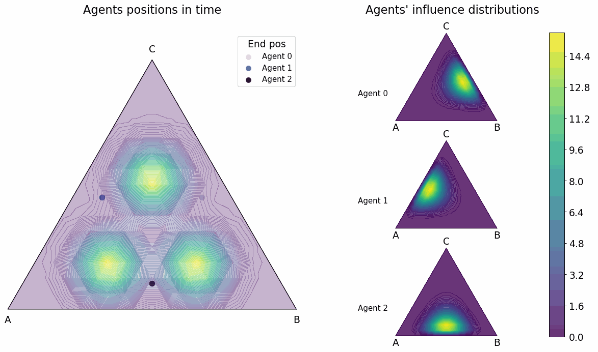
This is a 3 player influence distribution and position plot gif for a simplex domain.#
- Parameters:
- max_framesint
Maximum number of frames for the gif.
- output_filenamestr
Name of the output GIF file.
- optimize_memorybool
Whether to use memory optimization techniques.
- dpiint
DPI for the frames (lower = faster, higher = better quality).
- fpsint
Frames per second for the GIF.
- qualityint
GIF compression quality (1-10, lower = smaller file).
- verbosebool
Whether to print progress information.
- Returns:
- matplotlib.figure.Figure
The generated gif figure.
- dist_pos_plot(parameter_instance, typelabels=['A', 'B', 'C'], cmap1='twilight', cmap2='viridis', title_ads=[], save=False, name_ads=[], x_min=None, y_min=None, save_types=['.png', '.svg'], paper_figure={'figure_id': 'dist_pos_plot', 'paper': False, 'section': 'A'}, font={'cbar_size': 16, 'default_size': 15, 'font_family': 'sans-serif', 'legend_size': 12, 'title_size': 18})#
Plots the agents’ influence distributions with their their positions. The influence distributions are calculated from
calc_infl_distand the position vectors are calculated viaInflGame.adaptive.grad_func_env.gradient_ascent. This function works with all 3 domain types ‘1d’,’2d’, and ‘simplex’.** In one dimension**
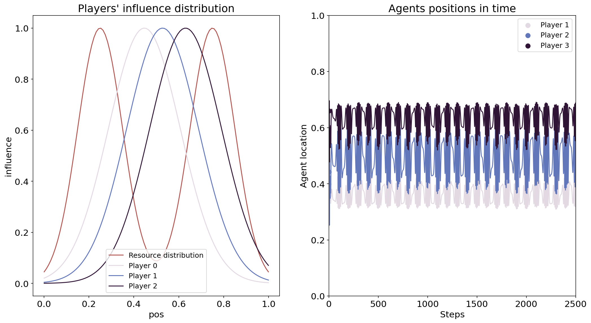
This is a 3 player influence distribution and position plot for a 1d domain.#
For a simplex
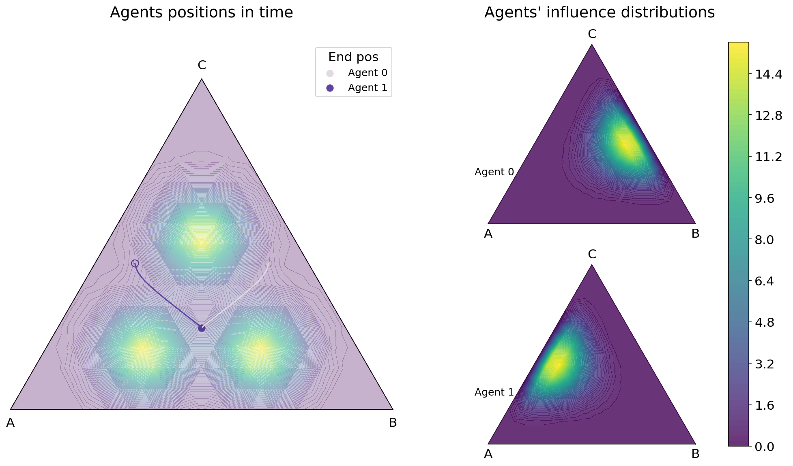
This is a 2 player influence distribution and position plot for a simplex domain.#
- Parameters:
- parameter_instanceUnion[List[float], np.ndarray, torch.Tensor]
Parameters for the influence function.
- typelabelsList[str]
Labels for agent types.
- cmap1str
Colormap for the plot.
- cmap2str
Colormap for the plot.
- title_adsList[str]
Additional titles for the plot.
- savebool
Whether to save the plot.
- name_adsList[str]
Additional names for saved files.
- save_typesList[str]
File types to save the plot.
- Returns:
- matplotlib.figure.Figure
The generated plot figure.
- equilibrium_bifurcation_plot(matrix=None, reach_start=0.03, reach_end=0.3, reach_num_points=30, time_steps=100, initial_pos=None, current_alpha=0.5, tolerance=None, tolerated_agents=None, refinements=2, plot_type='heat', title_ads=[], name_ads=[], save=False, save_types=['.png', '.svg'], return_matrix=False, parallel_configs=None, cmaps={'crit': 'Greys', 'heat': 'Blues', 'trajectory': '#851321'}, font={'cbar_size': 16, 'default_size': 15, 'font_family': 'sans-serif', 'legend_size': 12, 'title_size': 18}, cbar_config={'center_labels': True, 'label_alignment': 'center', 'shrink': 0.8}, paper_figure={'figure_id': 'equilibrium_bifurcation_plot', 'paper': False, 'section': 'A'}, show_pred=False, envelope=False, optional_vline=None, verbose=True, complete=False, learning_rate=None, percentage=None, show_bif_labels=True, bifurcation_key_tolerance=3, short_title=False)#
Plots the equilibrium bifurcation for agents over a range of reach parameters. As \(\sigma\) or as variance goes to zero for players’ influence kernels, the players begin to bifurcate. This plotting function computes the gradient ascent algorithm repetively for varying parameter values until the players reach an equilibrium.
I.e. each player will have a vector of final positions \(X_i=[x_1,x_2,\dots,x_A]\) where \(A\) is the number of test parameters and \(x_i\) is the final position of the \(i\) th player. Then the plot plots each players final position.
This is done via the function
final_pos_over_reach.1d example
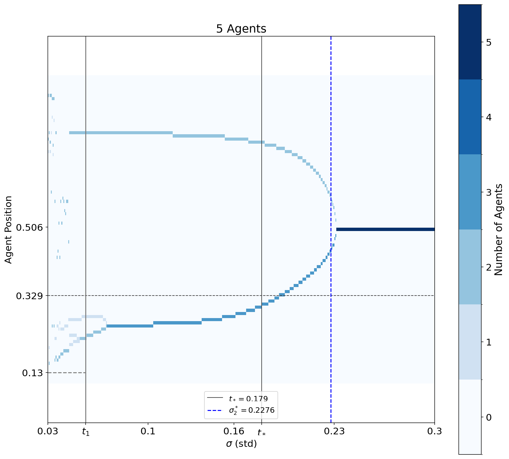
This is a 5 player positions bifurcation plot for a 1d domain.#
the critical values are estimated via
InflGame.domains.one_d.utils.critical_values_plot.2d example
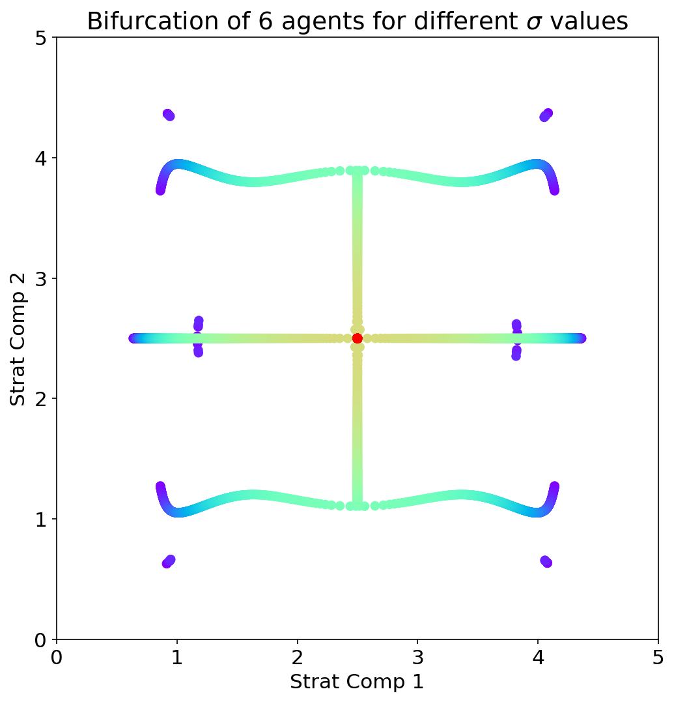
This is a 6 player positions bifurcation plot for a 2d domain.#
Simplex example
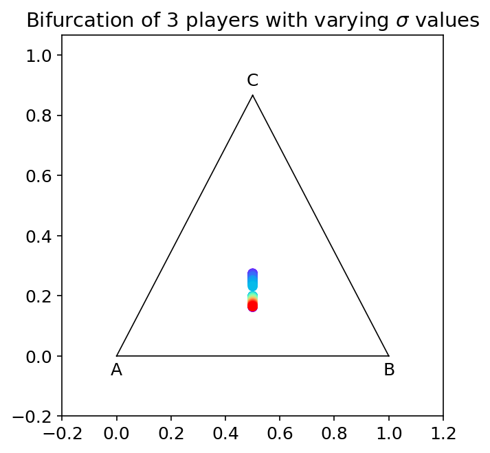
This is a 3 player positions bifurcation plot for a simplex.#
- Parameters:
- matrixOptional[Dict]
Pre-computed matrix of final positions (optional, will compute if None).
- reach_startfloat
Starting value of reach parameter.
- reach_endfloat
Ending value of reach parameter.
- reach_num_pointsint
Number of points in the reach parameter range.
- time_stepsint
Number of gradient ascent steps.
- initial_posUnion[List[float], np.ndarray]
Initial positions of agents.
- current_alphafloat
Current alpha value.
- toleranceOptional[float]
Tolerance for convergence.
- tolerated_agentsOptional[int]
Number of agents allowed to tolerate deviations.
- refinementsint
Refinement level for plotting.
- plot_typestr
Type of plot (‘heat’, ‘trajectory’, etc.).
- title_adsList[str]
Additional titles for the plot.
- name_adsList[str]
Additional names for saved files.
- savebool
Whether to save the plot.
- save_typesList[str]
File types to save the plot.
- return_matrixbool
Whether to return the final position matrix.
- parallel_configsOptional[Dict[str, Union[bool, int]]]
Configuration dictionary for parallel processing with keys ‘parallel’, ‘max_workers’, ‘batch_size’.
- cmapsdict
Color map configuration dictionary.
- fontdict
Font configuration dictionary.
- cbar_configdict
Colorbar configuration dictionary.
- paper_figuredict
Paper figure configuration dictionary.
- show_predbool
Whether to show predictions.
- envelopebool
Whether to use envelope method.
- optional_vlineOptional[List[float]]
Optional vertical lines to add to plot.
- verbosebool
Whether to print verbose output.
- completebool
Whether to compute complete bifurcation envelope.
- learning_rateOptional[List]
Learning rate schedule.
- percentageOptional[float]
Percentage threshold for envelope method.
- Returns:
- Union[torch.Tensor, matplotlib.figure.Figure]
The generated plot figure or final position matrix.
- find_and_analyze_zero_crossings(test_eval, parameters_list, x_star=None, threshold=5.0)#
Complete workflow to find, refine, and analyze eigenvalue zero crossings.
- Parameters:
- test_evaltorch.Tensor
Tensor of eigenvalues.
- parameters_listtorch.Tensor
Tensor of parameter values.
- x_starOptional[torch.Tensor]
Theoretical critical point (if available).
- thresholdfloat
Maximum absolute value to consider “close to zero”.
- Returns:
- Optional[dict]
Analysis results dictionary.
- find_zero_crossings(test_eval, parameters_list, threshold=5.0)#
Identify parameter values where eigenvalue real parts are close to zero.
- Parameters:
- test_evaltorch.Tensor
Tensor of eigenvalues [n_params, n_agents].
- parameters_listtorch.Tensor
Tensor of parameter values [n_params, n_agents].
- thresholdfloat
Maximum absolute value to consider “close to zero”.
- Returns:
- Tuple[torch.Tensor, torch.Tensor, torch.Tensor]
Tuple of (parameter indices, parameter values, real parts) near zero crossings.
- first_order_bifurcation_plot(processed_data, alpha_st=0, alpha_end=1, alpha_values=None, cutoff_index=None, title_ads=[], save=False, name_ads=[], font={'cbar_size': 16, 'default_size': 24, 'font_family': 'sans-serif', 'label_size': 10, 'legend_size': 12, 'table_size': 15, 'title_size': 34}, save_types=['.png', '.svg'], paper_figure={'figure_id': 'bif_diag', 'paper': False, 'section': '3_2_6'})#
Generate and plot first-order bifurcation diagram with stability analysis.
This method creates a visualization of first-order (saddle-node) bifurcations by computing equilibrium positions and their stability across a parameter range. The plot shows how equilibrium agent positions change as a resource parameter (alpha) varies, with stability indicated through
InflGame.adaptive.jacobian.jacobian_stability_fast.The method supports both original format (e.g., Gaussian kernels) and processed data format with pre-computed stability flips, making it flexible for different analysis workflows.
First-order bifurcations are characterized by the creation or annihilation of equilibrium pairs, typically visualized as branches that meet and disappear at critical parameter values.
Example Gaussian Bifurcation Diagram
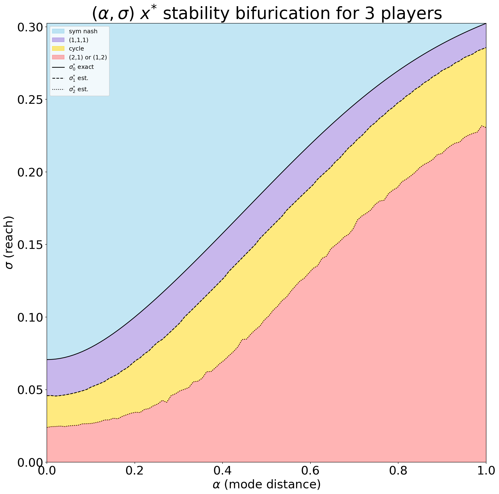
First-order bifurcation plot for 5 players using symmetric Gaussian influence kernels.#
- Parameters:
- processed_datadict
Pre-processed bifurcation data with ‘unstable_flip’, ‘stable_flip’, and optionally ‘cycles_end’.
- alpha_stfloat
Starting value of the resource parameter range.
- alpha_endfloat
Ending value of the resource parameter range.
- alpha_valuesOptional[np.ndarray]
Array of alpha (parameter) values corresponding to equilibria.
- cutoff_indexOptional[int]
Index to truncate the data (useful for focusing on specific parameter ranges).
- title_adsList[str]
Additional text to append to plot title.
- savebool
Whether to save the plot to file.
- name_adsList[str]
Additional text for saved filename.
- fontDict
Font configuration dictionary with keys: ‘default_size’, ‘cbar_size’, ‘title_size’, ‘legend_size’, ‘table_size’, ‘label_size’, ‘font_family’.
- save_typesList[str]
List of file formats for saving (e.g., [‘.png’, ‘.svg’]).
- paper_figuredict
Configuration for paper figure saving with keys: ‘paper’ (bool), ‘section’ (str), ‘figure_id’ (str).
- Returns:
- matplotlib.figure.Figure
The generated matplotlib figure object.
Examples
fig = vis.first_order_bifurcation_plot( processed_data=processed, alpha_st=0.0, alpha_end=1.0, save=True, name_ads=['my_bifurcation'], title_ads=['3-Player System'] ) fig.show()
- first_order_bifurcation_plot_old(agent_parameter_instance, resource_distribution_type, resource_entropy=False, infl_entropy=False, alpha_current=0.5, alpha_st=0, alpha_end=1, varying_parameter_type='mean', fixed_parameters_lst=None, name_ads=[], title_ads=[], save_types=['.png', '.svg'], paper_figure={'figure_id': 'first_order_bifurcation_plot', 'paper': False, 'section': 'A'}, font={'cbar_size': 16, 'default_size': 15, 'font_family': 'sans-serif', 'legend_size': 12, 'title_size': 18})#
Plots the first-order bifurcation for agents over a range of alpha values (resource parameters) via func:
jacobian_stability_fast. Currently only works for Gaussian influence and multi-variate Gaussian influence kernels.Gaussian example
This is a first order bifurcations plot for 5 players using symmetric Gaussian influence kernels.#
- Parameters:
- agent_parameter_instanceUnion[List[float], np.ndarray]
Parameters for the influence function.
- resource_distribution_typestr
Type of resource distribution.
- resource_entropybool
Whether to calculate resource entropy.
- infl_entropybool
Whether to calculate influence entropy.
- alpha_currentfloat
Current alpha value.
- alpha_stfloat
Starting value of alpha.
- alpha_endfloat
Ending value of alpha.
- varying_parameter_typestr
Type of varying parameter (e.g., ‘mean’).
- fixed_parameters_lstOptional[List[float]]
List of fixed parameters.
- name_adsList[str]
Additional names for saved files.
- title_adsList[str]
Additional titles for the plot.
- save_typesList[str]
File types to save the plot.
- Returns:
- matplotlib.figure.Figure
The generated plot figure.
- generate_combined_figure(alpha, test_processed, results_list, search, figsize=(32, 22), width_ratios=[1, 1], height_ratios=[1, 1, 1], hspace=0.4, wspace=0.12, region_labels=['a', 'b', 'c', 'd'], save=False, save_types=['.png', '.svg'], paper_figure={'figure_id': 'fig_combined', 'paper': True, 'section': '3_2_6'}, font={'cbar_size': 16, 'default_size': 32, 'font_family': 'sans-serif', 'legend_size': 12, 'title_size': 40})#
Generate the standardized combined bifurcation and equilibrium analysis figure.
Delegates to
InflGame.domains.one_d.one_plots.generate_combined_bifurcation_figure.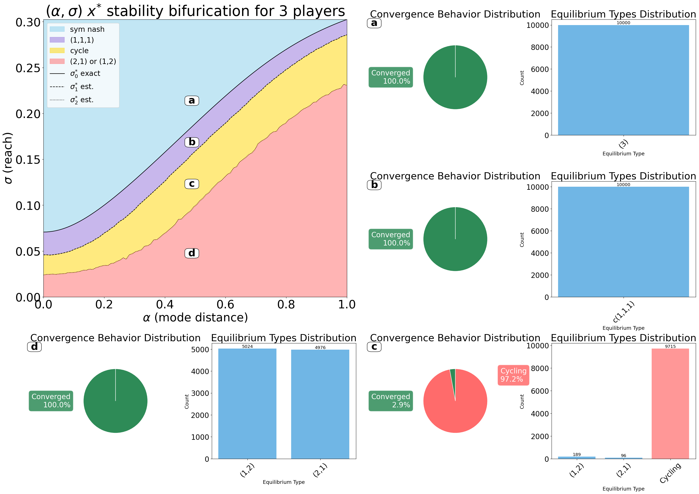
Combined first-order bifurcation diagram with regional equilibrium panels.#
- Parameters:
- alphaarray-like
Alpha (resource) parameter values for the bifurcation sweep.
- test_processeddict
Pre-processed bifurcation data (output of the bifurcation pipeline).
- results_listList[dict]
Exactly four region result dicts
[results1, results2, results3, results4].- searchsearch_env
Configured
monte_search.search_envinstance used to render equilibrium panels.- figsizeTuple[float, float]
Figure size in inches
(width, height).- width_ratiosList[float]
Column width ratios for the 3×2 GridSpec layout.
- height_ratiosList[float]
Row height ratios for the 3×2 GridSpec layout.
- hspacefloat
Vertical spacing between subplot rows.
- wspacefloat
Horizontal spacing between subplot columns.
- region_labelsList[str]
Labels placed on both the bifurcation diagram and the panel headers.
- savebool
Whether to save the figure to disk.
- save_typesList[str]
File extensions used when saving.
- paper_figuredict
Paper metadata:
{'paper': bool, 'section': str, 'figure_id': str}.- fontdict
Font configuration:
{'default_size', 'cbar_size', 'title_size', 'legend_size', 'font_family'}.
- Returns:
- matplotlib.figure.Figure
- grad_plot(title_ads=[], save=False, name_ads=[], font={'cbar_size': 16, 'default_size': 15, 'font_family': 'sans-serif', 'legend_size': 12, 'title_size': 18}, save_types=['.png', '.svg'], paper_figure={'figure_id': 'grad_plot', 'paper': False, 'section': 'A'})#
Plots the gradients of agents as the lines versus time.
\[\frac{\partial}{\partial x_{(i,l)}}u_i(x)=\sum_{k=1}^{K}G_{i,k}(x_i,b_k)\frac{\partial}{\partial x_{(i,l)}}ln(f_{i}(x_i,b_k))\]Where \(x_i\) is the \(i\) th players position, \(b_k\in \mathbb{B}\) are the bin/resource points, \(B(b_k)\) is the resource value at \(b_k\), and \(G_i(x_i,b_k)\) probability of player \(i\) influencing the bin point \(b\). The gradients are calculated via
InflGame.adaptive.grad_func_env.gradient.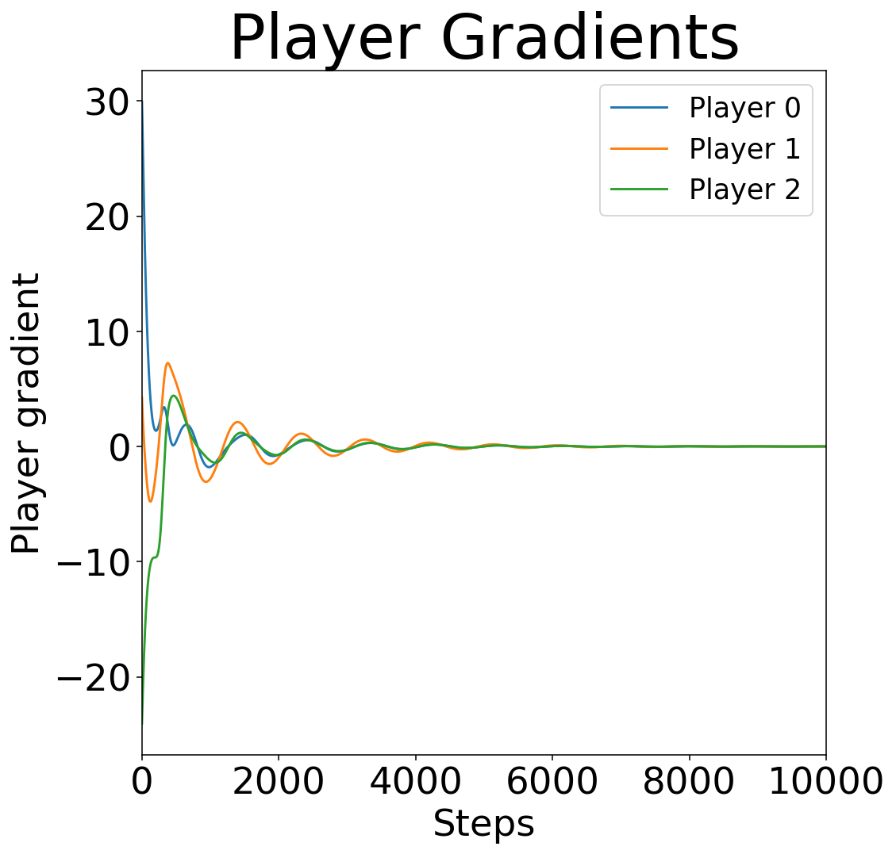
Example gradient trajectories for a three-player game in a 1D domain.#
- Parameters:
- title_adsList[str]
Additional titles for the plot.
- savebool
Whether to save the plot.
- name_adsList[str]
Additional names for saved files.
- save_typesList[str]
File types to save the plot.
- Returns:
- matplotlib.figure.Figure
The generated plot figure.
- jacobian_stability_fast(agent_parameter_instance, resource_distribution_type, resource_parameters, resource_entropy=False, infl_entropy=False)#
Calculate the stability of the symmetric Nash equilibrium via analytical computation of maximum eigenvalues.
This method analytically computes the Jacobian matrix eigenvalues at the symmetric Nash equilibrium to determine stability regions. Currently supports Gaussian and multi-variate Gaussian influence kernels.
The symmetric Nash equilibrium position is computed based on the resource distribution, and stability is assessed by examining the sign of the maximum real eigenvalue of the Jacobian.
- Parameters:
- agent_parameter_instanceUnion[List[float], np.ndarray]
Parameters for the influence function (e.g., sigma for Gaussian).
- resource_distribution_typestr
Type of resource distribution (‘gauss_mix_2m’, ‘uniform’, etc.).
- resource_parametersUnion[List[float], np.ndarray]
Parameters defining the resource distribution for each test point.
- resource_entropybool
Whether to calculate and return entropy of resource distributions.
- infl_entropybool
Whether to calculate and return entropy of influence distributions.
- Returns:
- Tuple[List[torch.Tensor], List[float], List[float]]
Tuple containing: - List of critical parameter values (one per resource configuration) - List of resource entropies (empty if resource_entropy=False) - List of influence entropies (empty if infl_entropy=False)
- Raises:
- ValueError
If influence type is not ‘gaussian’ or ‘multi_gaussian’.
- node_to_images(main, left_matrices, right_matrices, reach_parameters, reach_start, reach_end, key_tolerance=2, box_width=0.05, space=None, title_ads=[], font={'cbar_size': 12, 'default_size': 24, 'font_family': 'sans-serif', 'label_size': 24, 'legend_size': 12, 'title_size': 64}, hide_text=False, max_reward=None, show_column_labels=True)#
process all matrices and create images for each node
- Parameters:
- maindict
Main bifurcation matrix
- left_matriceslist
List of left branch matrices
- right_matriceslist
List of right branch matrices
- reach_parameterstorch.Tensor
Reach parameters
- key_toleranceint
Minimum distance between keys to process. If next key is closer than this, skip current key.
- plot_equilibrium_heatmap(newton_search_data, title_ads=[], save=False, name_ads=[], font={'cbar_size': 16, 'default_size': 15, 'font_family': 'sans-serif', 'label_size': 10, 'legend_size': 12, 'table_size': 15, 'title_size': 18}, save_types=['.png', '.svg'], paper_figure={'figure_id': 'equil_heat', 'paper': False, 'section': '3_2_6'})#
Generate and plot a heatmap of equilibrium positions in a 1D influence game. This method visualizes the equilibrium positions of agents in a 1D influence game as a heatmap, with optional stability analysis overlay.
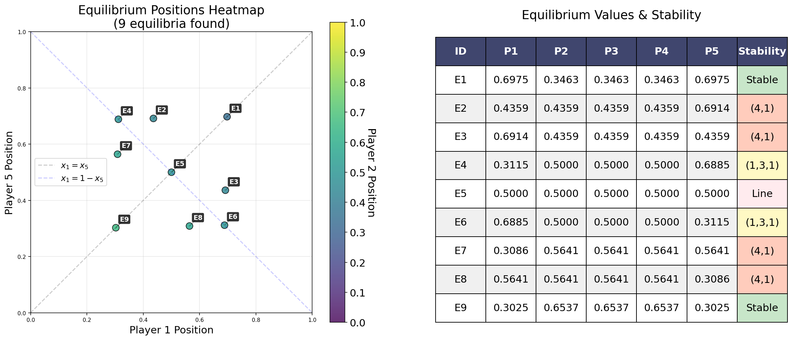
Example equilibrium heatmap from a Newton grid search.#
- Parameters:
- newton_search_datadict | list | np.ndarray
Equilibrium search results used to build the heatmap.
- title_adsList[str]
Additional text to append to plot title.
- savebool
Whether to save the plot to file.
- name_adsList[str]
Additional text for saved filename.
- fontDict
Font configuration dictionary with keys ‘default_size’, ‘cbar_size’, ‘title_size’, ‘legend_size’, ‘table_size’, ‘label_size’, ‘font_family’.
- save_typesList[str]
List of file formats for saving (e.g., [‘.png’, ‘.svg’]).
- paper_figuredict
Configuration for paper figure saving with keys: ‘paper’ (bool), ‘section’ (str), ‘figure_id’ (str).
- Returns:
- matplotlib.figure.Figure
The generated matplotlib figure object.
- pos_plot(title_ads=[], fig_size=(18, 18), save=False, name_ads=[], line_thickness=2, font={'cbar_size': 16, 'default_size': 15, 'font_family': 'sans-serif', 'legend_size': 12, 'title_size': 18}, save_types=['.png', '.svg'], paper_figure={'figure_id': 'pos_plot', 'paper': False, 'section': 'A'}, svg_options=None)#
Plots the positions of agents over gradient ascent steps. The positions of players are calculated via the results of
InflGame.adaptive.grad_func_env.gradient_ascent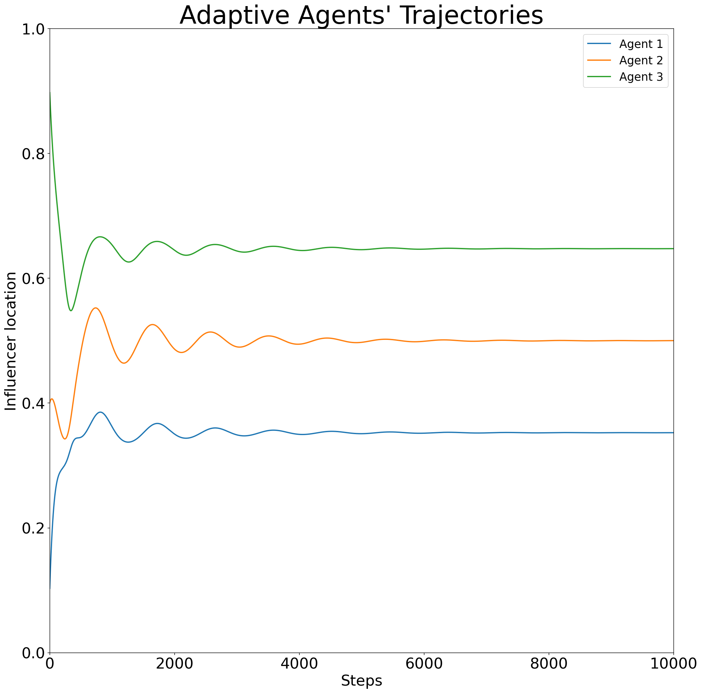
Example trajectory of agent positions over gradient-ascent steps in a 1D domain.#
- Parameters:
- title_adsList[str]
Additional titles for the plot.
- savebool
Whether to save the plot.
- name_adsList[str]
Additional names for saved files.
- save_typesList[str]
File types to save the plot.
- Returns:
- matplotlib.figure.Figure
The generated plot figure.
- position_at_equalibirum_histogram(reach_parameter=0.5, time_steps=100, initial_pos=0, current_alpha=0.5, tolerance=None, tolerated_agents=None, title_ads=[], name_ads=[], save=False, save_types=['.png', '.svg'], return_pos=False, parallel=True, max_workers=None, batch_size=None, paper_figure={'figure_id': 'position_at_equalibirum_histogram', 'paper': False, 'section': 'A'}, font={'cbar_size': 16, 'default_size': 15, 'font_family': 'sans-serif', 'legend_size': 12, 'title_size': 18})#
Plot the histogram of agents’ positions at equilibrium for a given reach parameter via the function
InflGame.adaptive.grad_func_env.gradient_ascent. This only works for ‘1d’ domains.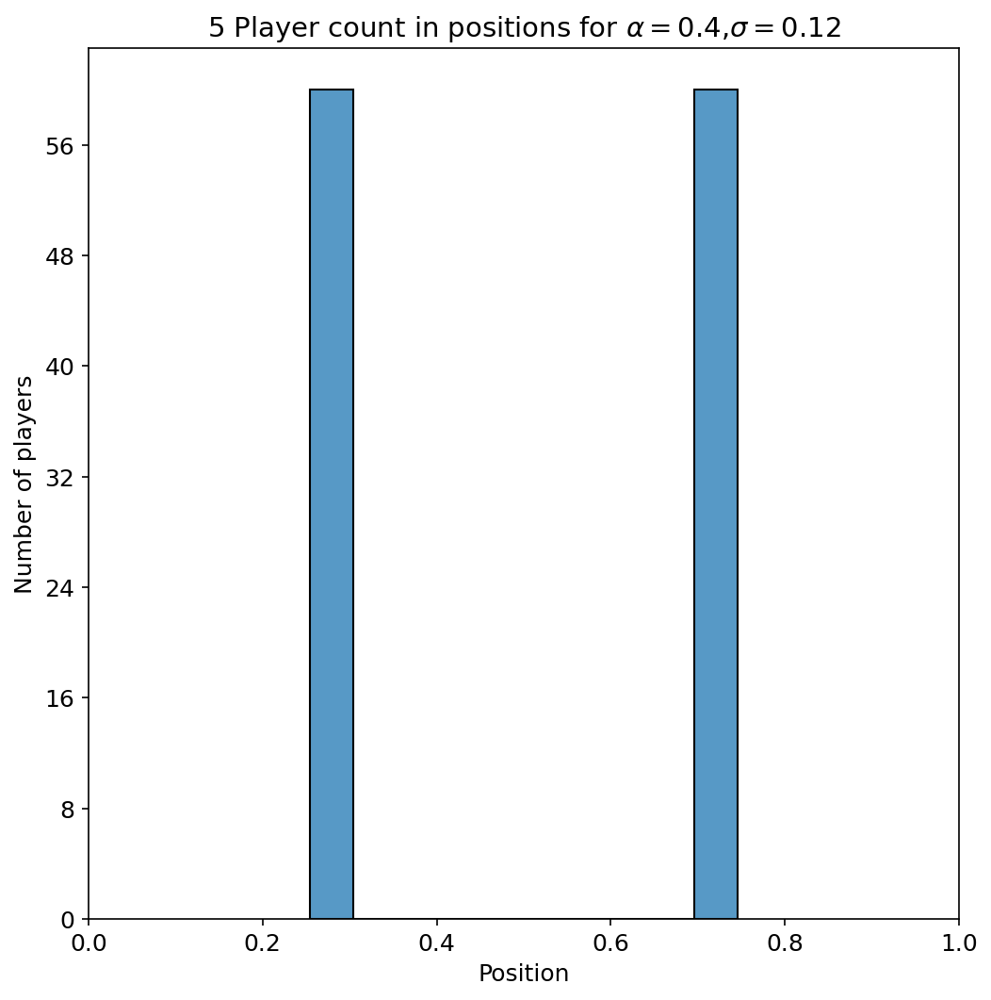
This is the histogram of player positions at equilibrium for 5 player game.#
- Parameters:
- reach_parameterfloat
Reach parameter value.
- time_stepsint
Number of gradient ascent steps.
- initial_posUnion[List[float], np.ndarray]
Initial positions of agents.
- current_alphafloat
Current alpha value.
- toleranceOptional[float]
Tolerance for convergence.
- tolerated_agentsOptional[int]
Number of agents allowed to tolerate deviations.
- title_adsList[str]
Additional titles for the plot.
- name_adsList[str]
Additional names for saved files.
- savebool
Whether to save the plot.
- save_typesList[str]
File types to save the plot.
- return_posbool
Whether to return the final positions.
- parallelbool
Whether to use parallel processing.
- max_workersOptional[int]
Maximum number of parallel workers (defaults to CPU count).
- batch_sizeOptional[int]
Batch size for processing (auto-calculated if None).
- paper_figuredict
Paper figure configuration dictionary.
- fontdict
Font configuration dictionary.
- Returns:
- Union[matplotlib.figure.Figure, Tuple[matplotlib.figure.Figure, np.ndarray]]
The generated plot figure or final positions.
- prob_plot(position=[], parameters=[], title_ads=[], save=False, name_ads=[], font={'cbar_size': 16, 'default_size': 15, 'font_family': 'sans-serif', 'legend_size': 12, 'title_size': 18}, save_types=['.png', '.svg'], paper_figure={'figure_id': 'prob_plot', 'paper': False, 'section': 'A'})#
Plot the probability distribution of agents’ influence over a bin/resource point via their relative influence over that point
\[G_{i,k}(\mathbf{x},b_k)=\frac{f_{i}(x_i,b_k)}{\sum_{j=1}^{N}f_{j}(x_j,b_k)}.\]where \(f_{i}(x_i,b_k)\) is the \(i\) th players influence. The probabilities are calculated via
InflGame.adaptive.grad_func_env.prob_matrix.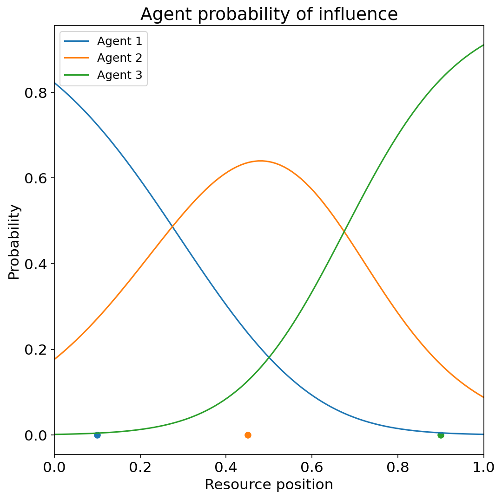
This is an example of the a three player game with agents in position \([.1,.45,.9]\) . Here the the influence kernels are symmetric gaussian with with parameter (reach) \(\sigma=0.25\) .#
There can is also the option to have a fixed third party (infl_csift==True) and/or abstaining voters if (infl_fshift==True).
- Parameters:
- positionnp.ndarray
Positions of agents.
- parametersnp.ndarray
Parameters for the influence function.
- title_adsList[str]
Additional titles for the plot.
- savebool
Whether to save the plot.
- name_adsList[str]
Additional names for saved files.
- save_typesList[str]
File types to save the plot.
- Returns:
- matplotlib.figure.Figure
The generated plot figure.
- resource_distribution_plot(alpha=None, show_alpha_line=True, title='Resource distribution', fig_size=(12, 8), line_width=2, save=False, name_ads=[], save_types=['.png', '.svg'], paper_figure={'figure_id': 'resource_dist', 'paper': False, 'section': 'A'}, font={'alpha_size': 20, 'cbar_size': 16, 'default_size': 15, 'font_family': 'sans-serif', 'legend_size': 12, 'title_size': 18}, y_padding=1.25)#
Plots the resource distribution with optional alpha line annotation for bimodal distributions.
For bimodal Gaussian distributions, this function draws a dashed line between the two peaks and labels it with \(\alpha\), representing the separation distance between peaks. The peak positions are calculated as \(0.5 - \alpha/2\) and \(0.5 + \alpha/2\).
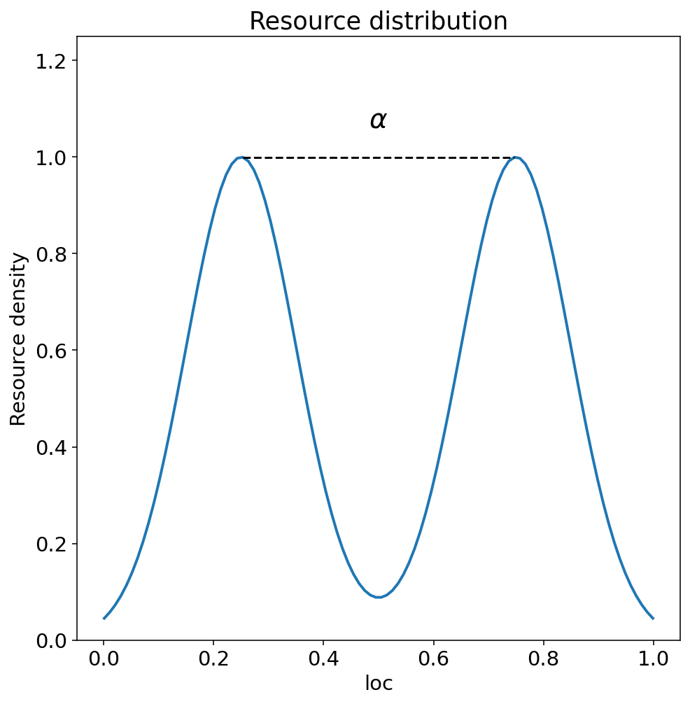
Example bimodal resource distribution with an \(\alpha\) annotation.#
- Parameters:
- alphafloat, optional
The separation parameter for bimodal distributions. If provided, a dashed line will be drawn between the peaks at positions (0.5 - alpha/2) and (0.5 + alpha/2).
- show_alpha_linebool
Whether to show the alpha annotation line between peaks.
- titlestr
Title for the plot.
- fig_sizeTuple
Figure size as (width, height).
- line_widthfloat
Width of the distribution line.
- savebool
Whether to save the plot.
- name_adsList[str]
Additional names for saved files.
- save_typesList[str]
File types to save the plot.
- paper_figuredict
Configuration for paper figure saving.
- fontdict
Font configuration dictionary.
- y_paddingfloat
Multiplier for y-axis upper limit to add space for labels.
- Returns:
- matplotlib.figure.Figure
The generated plot figure.
Examples
# Plot bimodal distribution with alpha annotation fig = shell.resource_distribution_plot(alpha=0.5, show_alpha_line=True)
- reward_groups_stacked(idx=0, rwd_type='bifurication', max_reward=None, box_width=0.01, matrix=None, space=None, title_ads=[], save=False, name_ads=[], reach_start=0.03, reach_end=0.3, reach_num_points=200, font={'cbar_size': 16, 'default_size': 15, 'font_family': 'sans-serif', 'label_size': 10, 'legend_size': 12, 'table_size': 15, 'title_size': 18}, show_outline=True, show_total_outline=True, show_label_box=True, aspect=1, save_types=['.png', '.svg'], paper_figure={'figure_id': 'reward_groups_stacked', 'paper': False, 'section': '3_2_6'})#
Plot stacked reward groups across agents for a selected bifurcation slice.
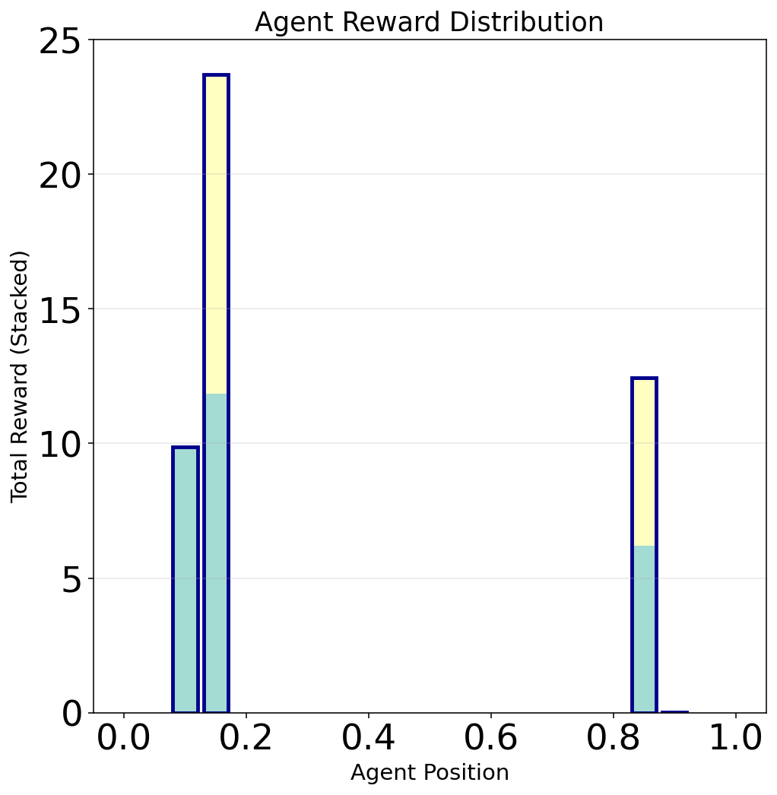
Stacked reward groups at a fixed reach for a five-player bifurcation.#
- setup_adaptive_env()#
Set up the adaptive environment for the simulation.
This initializes the
InflGame.adaptive.grad_func_env.AdaptiveEnvinstance with all parameters configured in the Shell constructor. The adaptive environment handles gradient ascent computation, influence calculations, and trajectory tracking.After calling this method, gradient ascent can be performed via
self.field.gradient_ascent()and results accessed throughself.field.pos_matrixandself.field.grad_matrix.
- setup_bifurcation_env()#
Set up the bifurcation environment for parameter sweep analysis.
This initializes the
InflGame.adaptive.bifurcation_analysis.BifurcationEnvinstance for computing equilibrium positions across parameter ranges. The bifurcation environment extends the adaptive environment with specialized methods for systematic parameter variation.After calling this method, bifurcation analysis can be performed via methods like
self.bif_field.final_pos_over_reach()andself.bif_field.equilibrium_bifurcation_complete().
- simple_diagonal_test_point(point=None)#
Test a single point to verify gradient ascent functionality.
This diagnostic method performs a simple gradient ascent run from a specified starting point to verify that the core optimization loop is working correctly. Useful for debugging and validation.
- Parameters:
- pointOptional[torch.Tensor]
Starting position for agents (defaults to [0.3, 0.5, 0.7] if None).
- Returns:
- bool
True if gradient ascent successfully generated a path, False otherwise.
- three_agent_pos_3A1d(x_star=None, title_ads=[], save=False, name_ads=[], line_thickness=2.0, fontL={'cbar_size': 16, 'default_size': 15, 'font_family': 'sans-serif', 'legend_size': 12, 'title_size': 18}, fontR={'cbar_size': 16, 'default_size': 15, 'font_family': 'sans-serif', 'legend_size': 12, 'title_size': 18}, fontmain={'cbar_size': 16, 'default_size': 15, 'font_family': 'sans-serif', 'legend_size': 12, 'title_size': 18}, save_types=['.png', '.svg'], paper_figure={'figure_id': 'pos_plot', 'paper': False, 'section': 'A'}, limits_params={'tick_count_left': 5, 'tick_count_right': 5, 'xlim_left': None, 'xlim_right': None})#
Create combined visualization showing three-agent dynamics in 3D space alongside position trajectories.
This method produces a side-by-side comparison plot for three-player games in 1D domains: - Left panel: 3D visualization of agent positions over time - Right panel: Traditional position vs. time plot
Only available for 1D domains with exactly 3 agents, as it visualizes the 3-dimensional trajectory space where each axis represents one agent’s position.
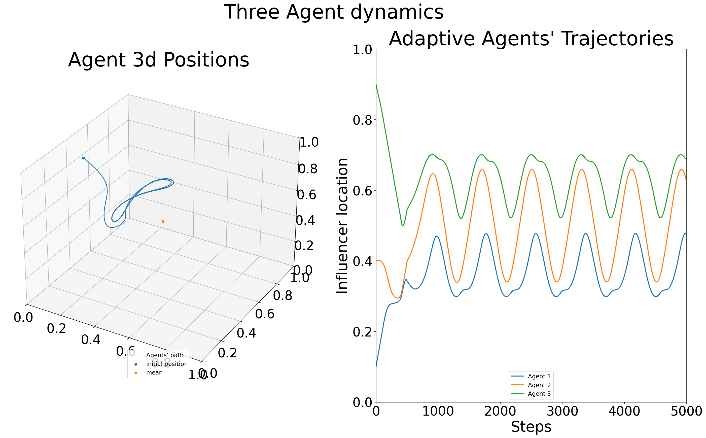
Side-by-side 3D position path and time-series trajectories for three agents.#
- Parameters:
- x_starOptional[float]
Equilibrium position (computed from resource distribution if not provided).
- title_adsList[str]
Additional title text components.
- savebool
Whether to save the figure to file.
- name_adsList[str]
Additional filename components for saving.
- fontLdict
Font configuration dictionary for left (3D) panel.
- fontRdict
Font configuration dictionary for right (position) panel.
- fontmaindict
Font configuration dictionary for main title.
- save_typesList[str]
File formats for saving (e.g., [‘.png’, ‘.svg’]).
- paper_figuredict
Paper figure configuration with ‘paper’, ‘section’, ‘figure_id’ keys.
- Returns:
- matplotlib.figure.Figure
Combined matplotlib figure with both visualizations.
- Raises:
- ValueError
If domain_type is not ‘1d’ or num_agents is not 3.
- three_agent_pos_3d(x_star=None, title_ads=[], name_ads=[], save=False, font={'cbar_size': 16, 'default_size': 15, 'font_family': 'sans-serif', 'legend_size': 12, 'title_size': 18}, save_types=['.png', '.svg'], paper_figure={'figure_id': 'three_players', 'paper': False, 'section': 'A'})#
Visualize dynamics for three players: demonstrates the players positions changing in time in 3-d space. Demonstrating the instability of 3-players in influencer games. Given that this function is in 3-d space for players with 1-d strategies there isn’t a way to visualize the 3 player dynamics in games with more then 1d strategy spaces. The positions of players are calculated via the results of
InflGame.adaptive.grad_func_env.gradient_ascent.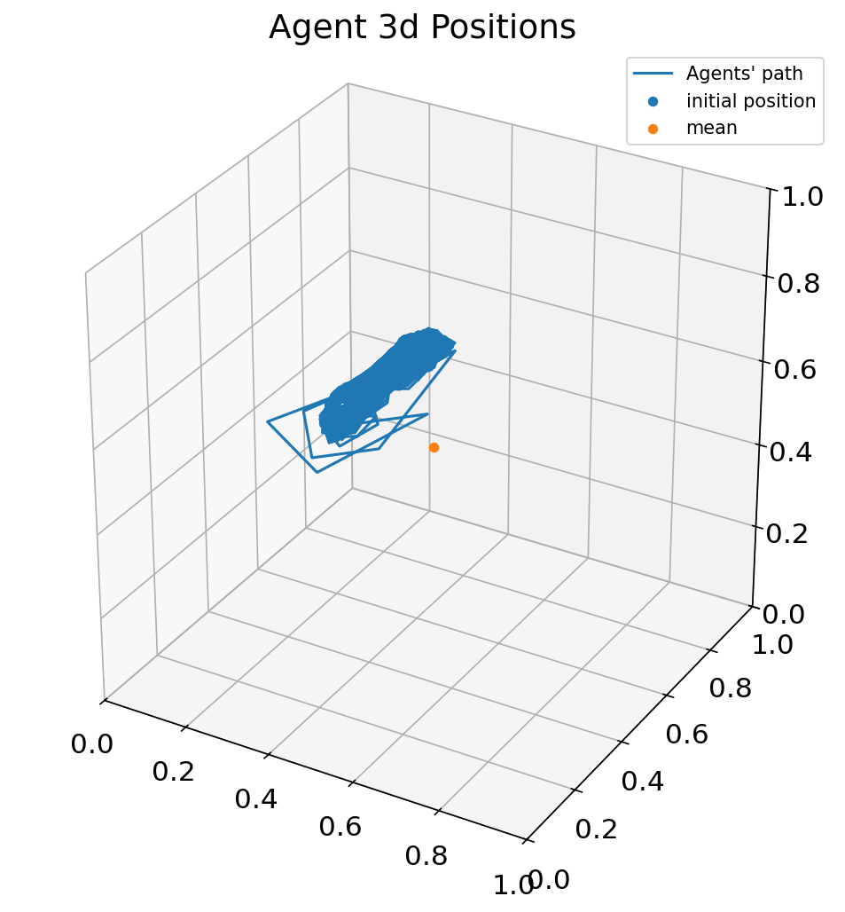
This is an example of the three player dynamics via their positions in time`.#
- Parameters:
- x_starOptional[float]
Equilibrium position.
- title_adsList[str]
Additional titles for the plot.
- name_adsList[str]
Additional names for saved files.
- savebool
Whether to save the plot.
- save_typesList[str]
File types to save the plot.
- Returns:
- matplotlib.figure.Figure
The generated plot figure.
- threed_fixed_diagonal_view(resolution=5, time_steps=10000, show_planes=True, figsize=(12, 10), seed=42, include_boundaries=True, elev=10, azim=45, num_workers=4, use_parallel=True, only_results=False, verbose=False)#
Creates a 3D plot with fixed view looking down the x=y=z diagonal line, showing gradient ascent trajectories from multiple starting points with optional parallel processing.
This method visualizes how agents starting from different initial positions converge or diverge under gradient ascent dynamics. The view is oriented to look down the main diagonal (x=y=z line) to better visualize symmetric and asymmetric equilibria. Paths are color-coded by the ordering of initial agent positions.
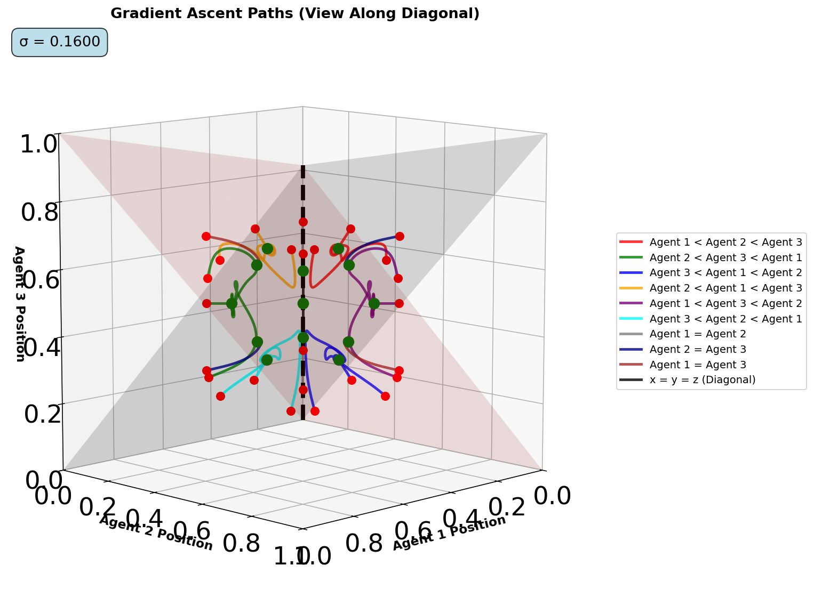
Diagonal-view 3D trajectories from multiple initial conditions.#
- Parameters:
- resolutionint
Number of test points per dimension (total points = resolution^3).
- time_stepsint
Maximum gradient ascent iterations per trajectory.
- show_planesbool
Whether to display equality planes (x=y, y=z, x=z) for reference.
- figsizeTuple[int, int]
Figure dimensions in inches (width, height).
- seedint
Random seed for reproducibility of starting points.
- include_boundariesbool
Whether to include boundary points in the analysis.
- elevint
Elevation viewing angle in degrees (lower values look more downward).
- azimint
Azimuth viewing angle in degrees (rotation around vertical axis).
- num_workersint
Number of parallel worker processes.
- use_parallelbool
Whether to use parallel processing for trajectory computation.
- only_resultsbool
If True, return only the results dictionary without creating plot.
- verbosebool
Whether to print detailed progress information.
- Returns:
- Tuple[matplotlib.figure.Figure, List[dict]]
Tuple of (matplotlib figure, list of trajectory result dictionaries).
- threed_fixed_diagonal_view_gif(max_frames, output_filename='3d_diagonal_traces.gif', resolution=5, time_steps=10000, show_planes=True, figsize=(12, 10), seed=42, include_boundaries=True, elev=10, azim=45, num_workers=4, use_parallel=True, reach_start=0.08, reach_end=0.25, optimize_memory=True, dpi=100, fps=10, quality=8, verbose=False)#
Create a 3D diagonal view GIF showing gradient ascent traces over varying reach parameters. Similar to dist_pos_gif but for 3D visualization. Works by varying the reach parameters and creating frames of
threed_fixed_diagonal_view.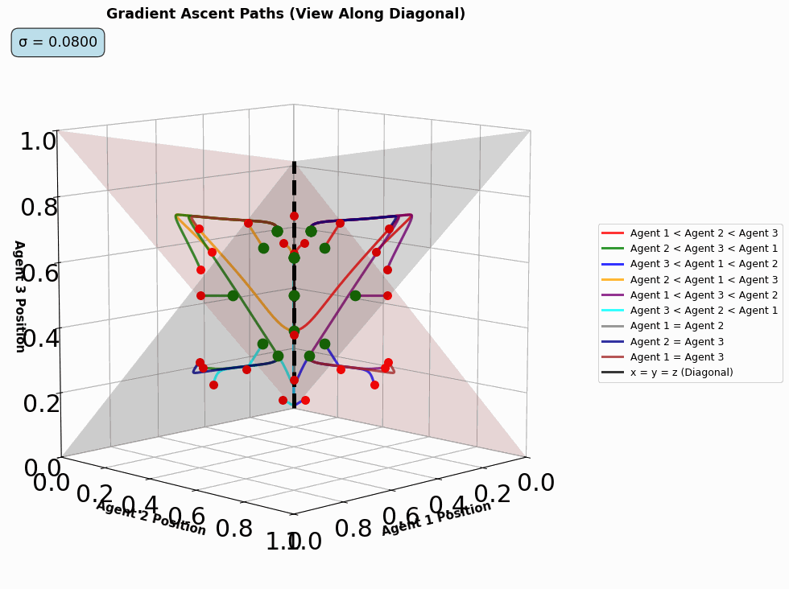
Animated diagonal-view trajectories as the reach parameter varies.#
Optimized Performance Features: - Direct memory writing without intermediate files - Matplotlib figure recycling for memory efficiency - Optimized frame sampling - Configurable quality vs speed trade-offs
- Parameters:
- max_framesint
Maximum number of frames for the gif.
- output_filenamestr
Name of the output GIF file.
- resolutionint
Resolution for point sampling in 3D plot.
- time_stepsint
Number of gradient ascent steps.
- show_planesbool
Whether to show equality planes in 3D plot.
- figsizetuple
Figure size for each frame.
- seedint
Random seed for reproducibility.
- include_boundariesbool
Whether to include boundary points in 3D plot.
- elevint
Elevation angle for 3D view.
- azimint
Azimuth angle for 3D view.
- num_workersint
Number of parallel workers for 3D processing.
- use_parallelbool
Whether to use parallel processing for 3D plots.
- reach_startfloat
Starting reach parameter value.
- reach_endfloat
Ending reach parameter value.
- optimize_memorybool
Whether to use memory optimization techniques.
- dpiint
DPI for the frames (lower = faster, higher = better quality).
- fpsint
Frames per second for the GIF.
- qualityint
GIF compression quality (1-10, lower = smaller file).
- verbosebool
Whether to print progress information.
- Returns:
- matplotlib.figure.Figure
The final frame figure for display.
- threed_gradient_ascent_paths_interactive(resolution=5, time_steps=10000, start_color='red', end_color='green', title='3D Path of Gradient Ascent (Interactive)', show_planes=False)#
Creates an interactive 3D plot of gradient ascent paths from multiple starting points, with paths color-coded based on the initial position’s quadrant.
The docs embed is a live Plotly figure (zoom / pan / hover). It is generated into
docs/_static/plotly/and isolated from the Sphinx theme via an iframe.- Parameters:
- resolutionint
Resolution of the cube grid (points per dimension).
- time_stepsint
Maximum number of steps for gradient ascent.
- start_colorstr
Color of the starting points.
- end_colorstr
Color of the ending points (for converged paths).
- titlestr
Plot title.
- show_planesbool
Whether to show the equality planes (x=y, y=z, z=x).
- Returns:
- plotly.graph_objects.Figure
Interactive 3D plot.
- vect_plot(agent_id=None, parameter_instance=None, cmap='viridis', typelabels=['A', 'B', 'C'], ids=[0, 1], pos=None, title_ads=[], save=False, name_ads=[], save_types=['.png', '.svg'], paper_figure={'figure_id': 'vect_plot', 'paper': False, 'section': 'A'}, font={'cbar_size': 16, 'default_size': 15, 'font_family': 'sans-serif', 'legend_size': 12, 'title_size': 18}, alt_form=False, **kwargs)#
Plot the vector field of gradients for a specific agents calculated by the function
calc_direction_and_strength. Currently only supports 1d domains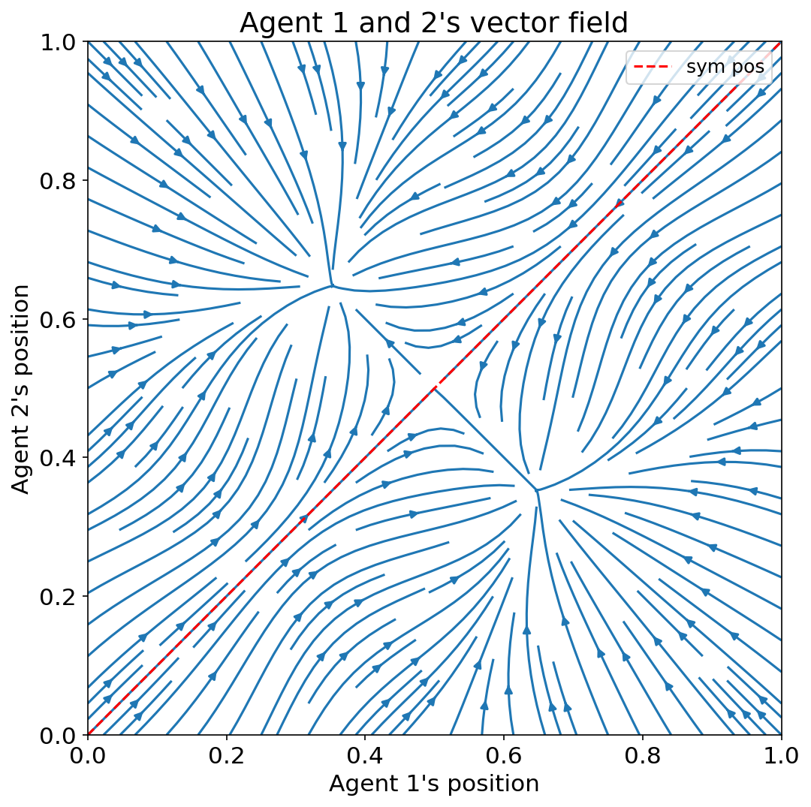
This is an example of the vector field for a three player game with only players 1 and 2 dynamics shown (player 3 is fixed)`.#
- Parameters:
- agent_idint
ID of the agent.
- parameter_instanceUnion[List[float], np.ndarray, torch.Tensor]
Parameters for the influence function.
- cmapstr
Colormap for the plot.
- typelabelsList[str]
Labels for agent types.
- idsList[int]
IDs of agents of interest.
- posOptional[torch.Tensor]
Positions of agents.
- title_adsList[str]
Additional titles for the plot.
- savebool
Whether to save the plot.
- name_adsList[str]
Additional names for saved files.
- save_typesList[str]
File types to save the plot.
- kwargs
Additional arguments for plotting.
- Returns:
- matplotlib.figure.Figure
The generated plot figure.
{kind=link}
{kind=link}
{kind=link}
{kind=link}
{kind=link}
{kind=link}
{kind=link}
{kind=link}
{kind=link}
{kind=link}
{kind=link}
{kind=link}
{kind=link}
{kind=link}
{kind=link}
{kind=link}
{kind=link}
{kind=link}
{kind=link}
{kind=link}
{kind=link}
{kind=link}
{kind=link}
{kind=link}
{kind=link}